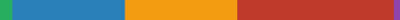

prototyping with fab
course description
This course allows to apprehend new technologies by practice in order to dive in the makers’ movement. Through contributions on creativity, design and digital manufacturing in a third-place enabler of innovation, this course gives you the keys to lead a project from a phase of ideation to its conceptualization and manufacturing.
learning hours
lecture 9h //
online 30h //
individual 30h //
collective 60h //
evaluation 2h >>
total 131h
sequences description
*M = Module : online & individual/collective practice at makers' lab
*S = Session : lecture or evaluation
I / toolbox (~11h / individual evaluation)
M 1: introduction to additive fabrication (3d printing)
M 2: introduction to web coding (codepen.io)
M 3: introduction to substractive fabrication (laser cutting)
M 4: introduction to electronics (Arduino)
S 1: lecture on makers movement
II / fabricate a POC(~40h / individual evaluation)
M 5: fabricate an opensource product with understanding of its technologies (electronics / digital fabrication)
M 6: make an exploration phase to generate a creative problematic
S 2.1: lecture on open source innovation
S 2.2: evaluation
S 2.3: mentors meeting (rapid prototyping methodology)
III / lead a project (~80h / group evaluation)
M 7: Mockup phase
M 8: Test & Iteration phase
M 9: Prototyping phase
M 10: Documentation phase
S 3: evaluation

designing with web
course description
This course allows to apprehend the world wide web by practice to live what a creative technologist is. Through contributions on creativity, design and web technologies in a third-place enabler of innovation, this course gives you the keys to lead a web project from a phase of ideation to its developpement.
learning hours
lecture 4h //
online 36h //
individual 36h //
collective 50h //
evaluation 2h >>
total 128h

sequences description
*M = Module : online & individual/collective practice at makers' lab
*S = Session : lecture
I / front end toolbox (individual evaluation)
M 1: structure datas (XML)
M 2: structure informations (HTML)
M 3: stylize elements (CSS)
M 4: program interactions (JS)
M 5: run server (nodeJS)
II / back end & process deep dive (individual evaluation)
M 6: introduction to UX/UI (Adobe XD)
M 7: introduction to mobile dev (frameworks)
M 8: introduction to APIs (IFTTT)
M 9: introduction to AI (tensorflow.JS)
M 10: introduction to databases (firebase)
III / lead a project (group evaluation)
M 11: Mockup phase
M 12: Test & Iteration phase
M 13: Prototyping phase
M 14: Documentation phase
S 1: web meetup